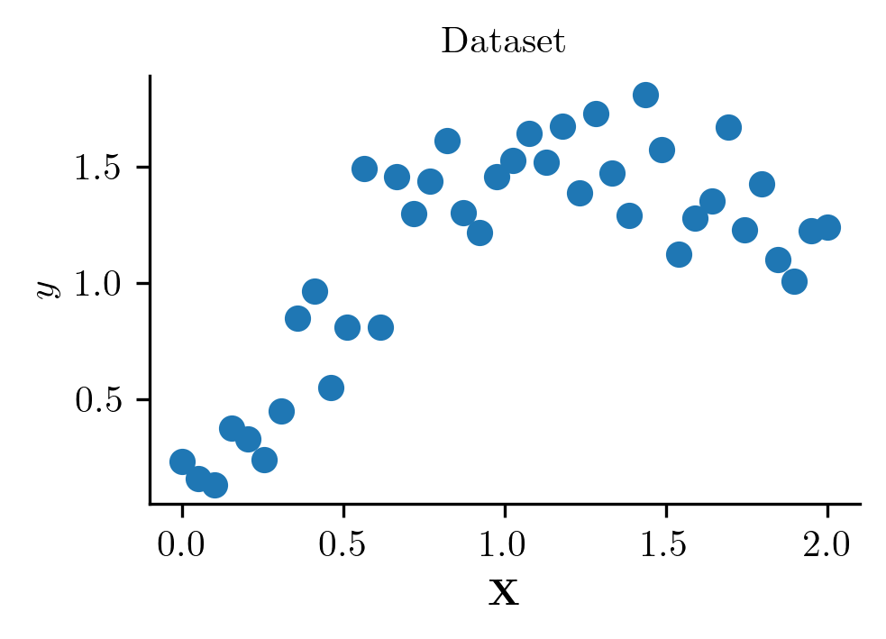
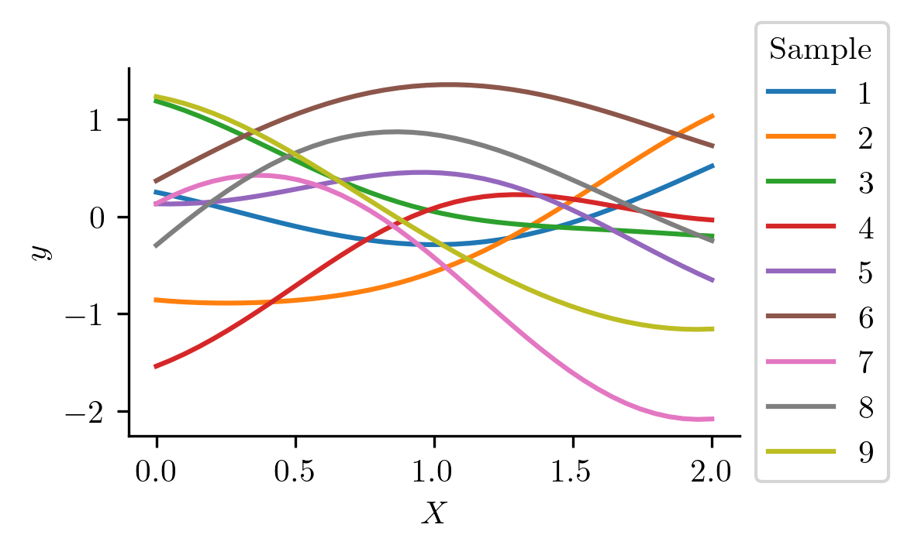
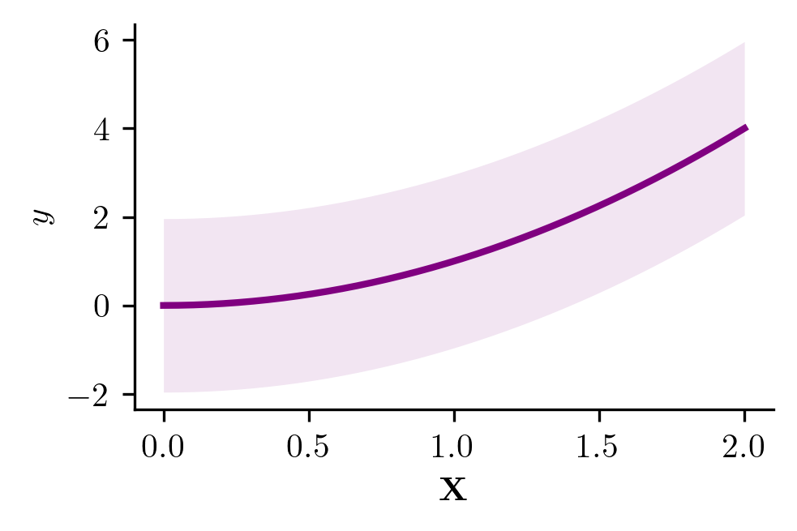
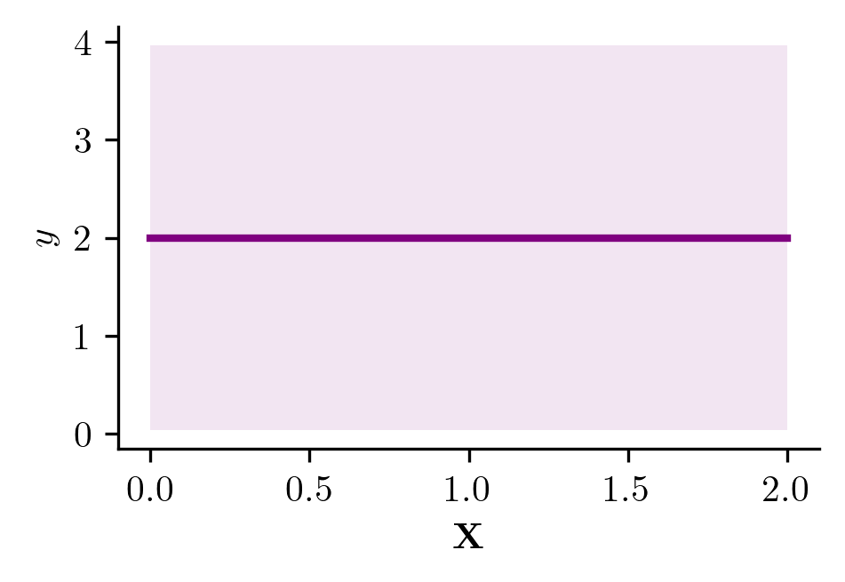
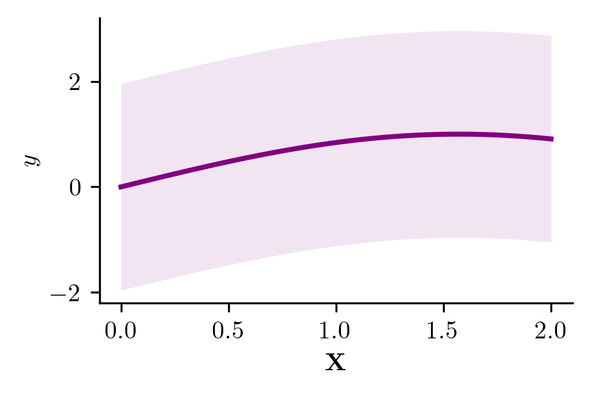
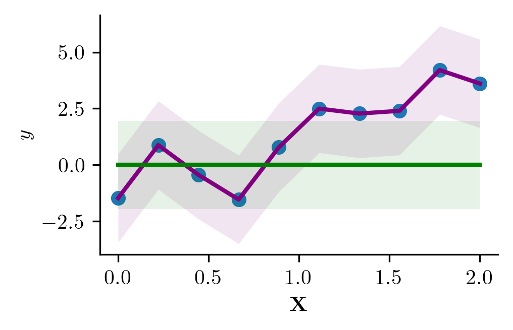

import numpy as np
import matplotlib.pyplot as plt
from stheno import GP, EQ
import matplotlib as mpl
import matplotlib.pyplot as plt
%matplotlib inlineplt.style.use('./mpl.mplstyle')/usr/local/anaconda3/lib/python3.8/site-packages/ipykernel/ipkernel.py:287: DeprecationWarning: `should_run_async` will not call `transform_cell` automatically in the future. Please pass the result to `transformed_cell` argument and any exception that happen during thetransform in `preprocessing_exc_tuple` in IPython 7.17 and above.
and should_run_async(code)x = np.linspace(0, 2, 40) # Some points to predict at
f = GP(EQ()) # Construct Gaussian process./usr/local/anaconda3/lib/python3.8/site-packages/ipykernel/ipkernel.py:287: DeprecationWarning: `should_run_async` will not call `transform_cell` automatically in the future. Please pass the result to `transformed_cell` argument and any exception that happen during thetransform in `preprocessing_exc_tuple` in IPython 7.17 and above.
and should_run_async(code)y = 2*np.sin(x) - 0.2*x*x + 0.2*np.random.randn(40),
plt.scatter(x, y)
plt.xlabel(r"$\textbf{X}$")
plt.ylabel(r"$y$")
plt.title("Dataset")/usr/local/anaconda3/lib/python3.8/site-packages/ipykernel/ipkernel.py:287: DeprecationWarning: `should_run_async` will not call `transform_cell` automatically in the future. Please pass the result to `transformed_cell` argument and any exception that happen during thetransform in `preprocessing_exc_tuple` in IPython 7.17 and above.
and should_run_async(code)Text(0.5, 1.0, 'Dataset')
n = 9
s = f(x).sample(n) /usr/local/anaconda3/lib/python3.8/site-packages/ipykernel/ipkernel.py:287: DeprecationWarning: `should_run_async` will not call `transform_cell` automatically in the future. Please pass the result to `transformed_cell` argument and any exception that happen during thetransform in `preprocessing_exc_tuple` in IPython 7.17 and above.
and should_run_async(code)plt.plot(x, s);
plt.xlabel("$X$")
plt.ylabel(r"$y$")
plt.legend(list(range(1, 10)), loc='center left', bbox_to_anchor=(1, 0.5), title='Sample')/usr/local/anaconda3/lib/python3.8/site-packages/ipykernel/ipkernel.py:287: DeprecationWarning: `should_run_async` will not call `transform_cell` automatically in the future. Please pass the result to `transformed_cell` argument and any exception that happen during thetransform in `preprocessing_exc_tuple` in IPython 7.17 and above.
and should_run_async(code)<matplotlib.legend.Legend at 0x7fc92bf2eee0>
mu, lower, upper = f(x).marginal_credible_bounds()
plt.plot(x, mu, color='purple', lw=2)
plt.fill_between(x, lower, upper, alpha=0.1, color='purple', interpolate=False,lw=0)
plt.xlabel(r"$\textbf{X}$")
plt.ylabel(r"$y$")/usr/local/anaconda3/lib/python3.8/site-packages/ipykernel/ipkernel.py:287: DeprecationWarning: `should_run_async` will not call `transform_cell` automatically in the future. Please pass the result to `transformed_cell` argument and any exception that happen during thetransform in `preprocessing_exc_tuple` in IPython 7.17 and above.
and should_run_async(code)Text(0, 0.5, '$y$')f2 = GP(lambda x: x*x, EQ())
mu, lower, upper = f2(x).marginal_credible_bounds()
plt.plot(x, mu, color='purple', lw=2)
plt.fill_between(x, lower, upper, alpha=0.1, color='purple', lw=0)
plt.xlabel(r"$\textbf{X}$")
plt.ylabel(r"$y$")/usr/local/anaconda3/lib/python3.8/site-packages/ipykernel/ipkernel.py:287: DeprecationWarning: `should_run_async` will not call `transform_cell` automatically in the future. Please pass the result to `transformed_cell` argument and any exception that happen during thetransform in `preprocessing_exc_tuple` in IPython 7.17 and above.
and should_run_async(code)Text(0, 0.5, '$y$')
f3 = GP(2.0, EQ())
mu, lower, upper = f3(x).marginal_credible_bounds()
plt.plot(x, mu, color='purple', lw=2)
plt.fill_between(x, lower, upper, alpha=0.1, color='purple', lw=0)
plt.xlabel(r"$\textbf{X}$")
plt.ylabel(r"$y$")/usr/local/anaconda3/lib/python3.8/site-packages/ipykernel/ipkernel.py:287: DeprecationWarning: `should_run_async` will not call `transform_cell` automatically in the future. Please pass the result to `transformed_cell` argument and any exception that happen during thetransform in `preprocessing_exc_tuple` in IPython 7.17 and above.
and should_run_async(code)Text(0, 0.5, '$y$')
f4 = GP(lambda x: np.sin(x), EQ())
mu, lower, upper = f4(x).marginal_credible_bounds()
plt.plot(x, mu, color='purple', lw=2)
plt.fill_between(x, lower, upper, alpha=0.1, color='purple', lw=0)
plt.xlabel(r"$\textbf{X}$")
plt.ylabel(r"$y$")/usr/local/anaconda3/lib/python3.8/site-packages/ipykernel/ipkernel.py:287: DeprecationWarning: `should_run_async` will not call `transform_cell` automatically in the future. Please pass the result to `transformed_cell` argument and any exception that happen during thetransform in `preprocessing_exc_tuple` in IPython 7.17 and above.
and should_run_async(code)Text(0, 0.5, '$y$')
import numpy as np
from stheno import GP, EQ
x = np.linspace(0, 2, 10) # Some points to predict at
y = x ** 2 + np.random.randn(10) # Some observations
f = GP(EQ())
f2 = GP(EQ())
# Construct Gaussian process.
f_post = f | (f(x), y)
f2_post = f2 | (f2(x), y)/usr/local/anaconda3/lib/python3.8/site-packages/ipykernel/ipkernel.py:287: DeprecationWarning: `should_run_async` will not call `transform_cell` automatically in the future. Please pass the result to `transformed_cell` argument and any exception that happen during thetransform in `preprocessing_exc_tuple` in IPython 7.17 and above.
and should_run_async(code)mu, lower, upper = f_post(x, 1).marginal_credible_bounds()
plt.plot(x, mu, color='purple', lw=2)
plt.fill_between(x, lower, upper, alpha=0.1, color='purple', lw=0)
plt.xlabel(r"$\textbf{X}$")
plt.ylabel(r"$y$")
plt.scatter(x, y)
mu, lower, upper = f(x).marginal_credible_bounds()
plt.plot(x, mu, color='green', lw=2)
plt.fill_between(x, lower, upper, alpha=0.1, color='green', lw=0)/usr/local/anaconda3/lib/python3.8/site-packages/ipykernel/ipkernel.py:287: DeprecationWarning: `should_run_async` will not call `transform_cell` automatically in the future. Please pass the result to `transformed_cell` argument and any exception that happen during thetransform in `preprocessing_exc_tuple` in IPython 7.17 and above.
and should_run_async(code)<matplotlib.collections.PolyCollection at 0x7fc912c5cc40>
import numpy as np
from stheno import GP, EQ
x = np.linspace(0, 2, 10) # Some points to predict at
y = x ** 2 # Some observations
f = GP(EQ())
f2 = GP(EQ())
# Construct Gaussian process.
f_post = f | (f(x), y)
f2_post = f | (f2(x), y)/usr/local/anaconda3/lib/python3.8/site-packages/ipykernel/ipkernel.py:287: DeprecationWarning: `should_run_async` will not call `transform_cell` automatically in the future. Please pass the result to `transformed_cell` argument and any exception that happen during thetransform in `preprocessing_exc_tuple` in IPython 7.17 and above.
and should_run_async(code)RuntimeError: Could not build value for index "140586821389856".
f_post = f | (f(x), y) # Compute the posterior.
pred = f_post(np.array([1, 2, 3])) # Predict!/usr/local/anaconda3/lib/python3.8/site-packages/ipykernel/ipkernel.py:287: DeprecationWarning: `should_run_async` will not call `transform_cell` automatically in the future. Please pass the result to `transformed_cell` argument and any exception that happen during thetransform in `preprocessing_exc_tuple` in IPython 7.17 and above.
and should_run_async(code)pred.mean/usr/local/anaconda3/lib/python3.8/site-packages/ipykernel/ipkernel.py:287: DeprecationWarning: `should_run_async` will not call `transform_cell` automatically in the future. Please pass the result to `transformed_cell` argument and any exception that happen during thetransform in `preprocessing_exc_tuple` in IPython 7.17 and above.
and should_run_async(code)<dense matrix: shape=3x1, dtype=float64
mat=[[1. ]
[4. ]
[8.483]]>post/usr/local/anaconda3/lib/python3.8/site-packages/ipykernel/ipkernel.py:287: DeprecationWarning: `should_run_async` will not call `transform_cell` automatically in the future. Please pass the result to `transformed_cell` argument and any exception that happen during thetransform in `preprocessing_exc_tuple` in IPython 7.17 and above.
and should_run_async(code)GP(PosteriorMean(), PosteriorKernel())post.mean(x)/usr/local/anaconda3/lib/python3.8/site-packages/ipykernel/ipkernel.py:287: DeprecationWarning: `should_run_async` will not call `transform_cell` automatically in the future. Please pass the result to `transformed_cell` argument and any exception that happen during thetransform in `preprocessing_exc_tuple` in IPython 7.17 and above.
and should_run_async(code)<dense matrix: shape=100x1, dtype=float64
mat=[[-1.48836980e-08]
[ 4.08109183e-04]
[ 1.63247579e-03]
[ 3.67308766e-03]
[ 6.52994689e-03]
[ 1.02030521e-02]
[ 1.46924008e-02]
[ 1.99979908e-02]
[ 2.61198205e-02]
[ 3.30578877e-02]
[ 4.08121935e-02]
[ 4.93827372e-02]
[ 5.87695199e-02]
[ 6.89725441e-02]
[ 7.99918104e-02]
[ 9.18273217e-02]
[ 1.04479079e-01]
[ 1.17947083e-01]
[ 1.32231337e-01]
[ 1.47331838e-01]
[ 1.63248590e-01]
[ 1.79981591e-01]
[ 1.97530838e-01]
[ 2.15896332e-01]
[ 2.35078071e-01]
[ 2.55076054e-01]
[ 2.75890277e-01]
[ 2.97520742e-01]
[ 3.19967445e-01]
[ 3.43230386e-01]
[ 3.67309562e-01]
[ 3.92204976e-01]
[ 4.17916626e-01]
[ 4.44444512e-01]
[ 4.71788637e-01]
[ 4.99949003e-01]
[ 5.28925606e-01]
[ 5.58718454e-01]
[ 5.89327547e-01]
[ 6.20752885e-01]
[ 6.52994471e-01]
[ 6.86052307e-01]
[ 7.19926393e-01]
[ 7.54616730e-01]
[ 7.90123320e-01]
[ 8.26446161e-01]
[ 8.63585253e-01]
[ 9.01540594e-01]
[ 9.40312186e-01]
[ 9.79900023e-01]
[ 1.02030410e+00]
[ 1.06152443e+00]
[ 1.10356099e+00]
[ 1.14641379e+00]
[ 1.19008283e+00]
[ 1.23456809e+00]
[ 1.27986960e+00]
[ 1.32598733e+00]
[ 1.37292130e+00]
[ 1.42067149e+00]
[ 1.46923793e+00]
[ 1.51862059e+00]
[ 1.56881950e+00]
[ 1.61983465e+00]
[ 1.67166604e+00]
[ 1.72431368e+00]
[ 1.77777757e+00]
[ 1.83205771e+00]
[ 1.88715411e+00]
[ 1.94306678e+00]
[ 1.99979570e+00]
[ 2.05734088e+00]
[ 2.11570233e+00]
[ 2.17488002e+00]
[ 2.23487398e+00]
[ 2.29568418e+00]
[ 2.35731062e+00]
[ 2.41975331e+00]
[ 2.48301222e+00]
[ 2.54708736e+00]
[ 2.61197871e+00]
[ 2.67768628e+00]
[ 2.74421006e+00]
[ 2.81155006e+00]
[ 2.87970627e+00]
[ 2.94867870e+00]
[ 3.01846736e+00]
[ 3.08907228e+00]
[ 3.16049345e+00]
[ 3.23273091e+00]
[ 3.30578467e+00]
[ 3.37965473e+00]
[ 3.45434113e+00]
[ 3.52984383e+00]
[ 3.60616284e+00]
[ 3.68329809e+00]
[ 3.76124951e+00]
[ 3.84001695e+00]
[ 3.91960023e+00]
[ 3.99999906e+00]]>